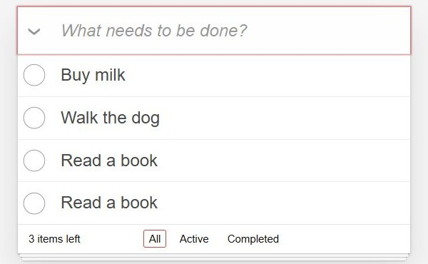

Mutation testing for Kane CLI suites
Green is a claim. Mutek checks it.
It breaks your running app one realistic way at a time, replays your Kane CLI tests against every broken version, and sends each bug they miss to your coding agent. A new check only counts after Kane proves it: passes on the real app, fails on the broken one.
bugs caught, before and after five proven fixes (40 planted bugs)
bugs caught, before and after four proven fixes (18 planted bugs)
Break it yourself.
A small cart and two checks a coding agent might write for it. Choose a bug, and see which check notices. It runs here in your browser; the real tool does this to your own app over the network, with Kane CLI driving a real Chrome.
The app
The checks
Green in Kane, broken on screen.
Both suites were written by fresh Claude Code sessions that never heard of Mutek. The screenshots come from Kane's own evidence packs, taken at the end of runs that passed.
Another customer's order in "My orders"
The order-history test passed while order #91002, someone else's, sat at the top of the list. One appended check fixed it: exactly the customer's own two orders, nothing else.

"Exactly three items" passed with four on screen
A duplicated TodoMVC row, the counter still reading 3 items left, and a replayed check for exactly three items passed regardless.

Healing passed a bug Kane had just named
Strict replay failed and Kane's triage described the bug exactly. With default healing on, the re-authored check read the hidden row from the DOM and passed. Mutek records these as masked.
“The page says there are 3 items left but shows only ‘Walk the dog’ and ‘Read a book’; the expected ‘Buy milk’ item is missing.”Kane CLI triage · application issue · major · 0.96
The method, in five steps.
A proxy sits between the browser and your app. Your code and your tests stay as they are; point the tests at the proxy and run one command.
- Break one thingThe proxy rewrites a single response or control: a wrong total, a swallowed 500, a missing button, a stranger's record.
- Replay in KaneKane CLI replays the suite from its recordings in a real Chrome, with healing switched off.
- Let Kane judgeAn inverted Kane policy fails the verdict whenever every test passed while the app was broken.
- Hand it to the agentEach survivor, with a screenshot of the broken page, goes to Claude Code or Codex, which may only append one check.
- Prove it twiceThe new check must pass on the real app and fail on the broken one. Otherwise it is reverted and retried.
A Stop hook that says no
Claude Code can't call the job done while tests changed since the last run or the score sits below the bar.
A third coverage state
Acceptance criteria as owed, guarded, or proven but unguarded: tested, yet a bug that broke them got through.
Candid about blind spots
A bug that never reaches the screen is flagged as a suspected equivalent, never silently counted or dropped.
One real run, start to finish.
Recorded output, not a mock-up: six bugs planted in the agent's first-draft shop suite, then the fix for the one that mattered most.
Twenty ways to break an app.
Each one is generated from the requests and pages your suite actually produced, so every planted bug is one a test could have seen. Your agent can add domain bugs of its own.
The numbers, with receipts.
Kane CLI 0.10.5, 18 to 20 November 2026. Score = caught ÷ (caught + missed + masked by healing). Every row has run records, screenshots and Kane triage behind it.
Demo shop, 6 tests
| Run | Bugs | Score |
|---|---|---|
| Agent's first draft | 40 | 78.4% |
| After 5 proven fixes | 40 | 91.9% |
| Fresh re-run, harder set | 50 | 78.7% |
| After 3 more proven fixes | 50 | 85.1% |
TodoMVC, 6 tests, no backend
| Run | Bugs | Score |
|---|---|---|
| Agent's first draft | 18 | 77.8% |
| After 4 proven fixes | 18 | 100% |
| Incremental re-check | 17 | 94.1% |
| After 1 more proven fix | 17 | 100% |
Kane's checks are AI-judged, so one kill or survival is strong evidence rather than proof; the reports keep every run. CI runs the same tool against real Kane on Linux.
Set it up tonight.
Node 18 or newer, Chrome, and a TestMu AI account. Point your *_test.md files at the proxy (url: http://localhost:8080), start your app, then: